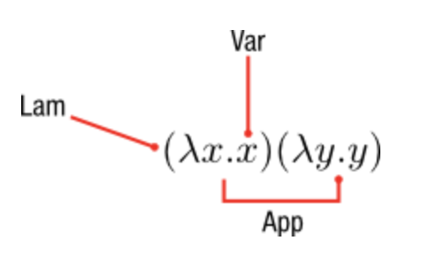

λ演算为许多语言奠定了理论和实践基础。每个微积分的核心是三个组成部分:
- Var - 表識一個變量
- Lam - 表識一個lambda抽象
- App - 表識一個應用

对这些构造和数据结构表示进行建模的方法有很多，但是它们或多或少都包含这三个要素。
例如，在lambda的binders和variables上使用字符串名称的lambda演算可能如下所示：1
2
3
4
5
6type Name = String
data Exp
= Var Name
| Lam Name Exp
| App Exp Exp
在lambda表达式中，出现在表达式主体中的所有变量都被外部lambda绑定器引用，則该表达式被称为是closed，而具有未绑定的自由变量的表达式则是open的。
HOAS
高阶抽象语法(HOAS)是在一种语言中实现lambda演算的一种技术，其中lambda表达式的绑定直接映射到宿主语言(即Haskell)的lambda绑定，从而通过利用Haskell的实现为我们的自定义语言提供substitution(替换)机制。1
2
3
4
5
6
7
8
9
10
11
12
13
14
15
16
17
18
19
20
21
22
23
24
25
26
27
28
data Expr a where
Con :: a -> Expr a
Lam :: (Expr a -> Expr b) -> Expr (a -> b)
App :: Expr (a -> b) -> Expr a -> Expr b
i :: Expr (a -> a)
i = Lam (\x -> x)
k :: Expr (a -> b -> a)
k = Lam (\x -> Lam (\y -> x))
s :: Expr ((a -> b -> c) -> (a -> b) -> (a -> c))
s = Lam (\x -> Lam (\y -> Lam (\z -> App (App x z) (App y z))))
eval :: Expr a -> a
eval (Con v) = v
eval (Lam f) = \x -> eval (f (Con x))
eval (App e1 e2) = (eval e1) (eval e2)
skk :: Expr (a -> a)
skk = App (App s k) k
example :: Integer
example = eval skk 1
-- 1
漂亮的打印HOAS术语也可能非常复杂，因为该函数的主体位于Haskell lambda绑定器下。
PHOAS
称为PHOAS的HOAS形式略有不同，它使用在binder类型上参数化的lambda数据类型。
在这种形式下，评估需要将其拆包为单独的Value类型以包装lambda表达式。1
2
3
4
5
6
7
8
9
10
11
12
13
14
15
16
17
18
19
20
21
22
23
24
25
26
27
28
29
30
31
32
33
34
35
36
37
38
39
40
41
42
43
44
45
data ExprP a
= VarP a
| AppP (ExprP a) (ExprP a)
| LamP (a -> ExprP a)
| LitP Integer
data Value
= VLit Integer
| VFun (Value -> Value)
fromVFun :: Value -> (Value -> Value)
fromVFun val = case val of
VFun f -> f
_ -> error "not a function"
fromVLit :: Value -> Integer
fromVLit val = case val of
VLit n -> n
_ -> error "not a integer"
newtype Expr = Expr { unExpr :: forall a . ExprP a }
eval :: Expr -> Value
eval e = ev (unExpr e) where
ev (LamP f) = VFun(ev . f)
ev (VarP v) = v
ev (AppP e1 e2) = fromVFun (ev e1) (ev e2)
ev (LitP n) = VLit n
i :: ExprP a
i = LamP (\a -> VarP a)
k :: ExprP a
k = LamP (\x -> LamP (\y -> VarP x))
s :: ExprP a
s = LamP (\x -> LamP (\y -> LamP (\z -> AppP (AppP (VarP x) (VarP z)) (AppP (VarP y) (VarP z)))))
skk :: ExprP a
skk = AppP (AppP s k) k
example :: Integer
example = fromVLit $ eval $ Expr (AppP skk (LitP 3))
請看:
Final Interpreters
使用类型类，我们可以实现Final Interpreters，该解释器使用绑定到类型类的函數而不是数据构造函数对一组可扩展terms(术语)进行建模。
类型类的实例在这些术语上形成解释器。
例如，我们可以编写一种包含基本算术的小语言，然后在不更改基数的情况下使用乘法运算符追溯性地扩展我们的表达式语言。同时，我们的解释器逻辑在扩展新表达式后仍保持不变。1
2
3
4
5
6
7
8
9
10
11
12
13
14
15
16
17
18
19
20
21
22
23
24
25
26
27
28
29
30
31
32
33
34
35
36
37
38
39
40
41
42
43
44
45
46
47
48
49
50
51
52
53
54
class Expr repr where
lit :: Int -> repr
neg :: repr -> repr
add :: repr -> repr -> repr
mul :: repr -> repr -> repr
instance Expr Int where
lit n = n
neg a = -a
add a b = a + b
mul a b = a * b
instance Expr String where
lit n = show n
neg a = "(-" ++ a ++ ")"
add a b = "(" ++ a ++ " + " ++ b ++ ")"
mul a b = "(" ++ a ++ " * " ++ b ++ ")"
class BoolExpr repr where
eq :: repr -> repr -> repr
tr :: repr
fl :: repr
instance BoolExpr Int where
eq a b = if a == b then tr else fl
tr = 1
fl = 0
instance BoolExpr String where
eq a b = "(" ++ a ++ " == " ++ b ++ ")"
tr = "true"
fl = "false"
eval :: Int -> Int
eval = id
render :: String -> String
render = id
expr :: (BoolExpr repr, Expr repr) => repr
expr = eq (add (lit 1) (lit 2)) (lit 3)
result :: Int
result = eval expr
-- 1
string :: String
string = render expr
-- "((1 + 2) == 3)"
Finally Tagless
同样，也可以使用final interpreter和Identity函子来为lambda演算编写评估器。1
2
3
4
5
6
7
8
9
10
11
12
13
14
15
16
17
18
19
20
21
22
23
24
25
26
27
28
29
30import Prelude hiding (id)
class Expr rep where
lam :: (rep a -> rep b) -> rep (a -> b)
app :: rep (a -> b) -> (rep a -> rep b)
lit :: a -> rep a
newtype Interpret a = R { reify :: a }
instance Expr Interpret where
lam f = R $ reify . f . R
app f a = R $ reify f $ reify a
lit = R
eval :: Interpret a -> a
eval e = reify e
e1 :: Expr rep => rep Int
e1 = app (lam (\x -> x)) (lit 3)
e2 :: Expr rep => rep Int
e2 = app (lam (\x -> lit 4)) (lam $ \x -> lam $ \y -> y)
example1 :: Int
example1 = eval e1
-- 3
example2 :: Int
example2 = eval e2
-- 4
請看: Typed Tagless Interpretations and Typed Compilation
Datatypes
描述代数数据类型的常用方法是指出求和类型、乘积类型和多项式表达式之间的自然对应关系是如何产生的。1
2
3
4
5data Void -- 0
data Unit = Unit -- 1
data Sum a b = Inl a | Inr b -- a + b
data Prod a b = Prod a b -- a * b
type (->) a b = a -> b -- b ^ a
直觉上遵循这样的观念，即总是可以根据类型的inhabitants(類型的實例的統稱)数量来给出其类型的基数。product类型允许许多inhabitants，如product函數(即笛卡尔积的基数).sum类型則是它的holes(孔)數总和.function类型則是domain(域)和codomain(共域)的span(范围)的指数.1
2
3
4
5-- domain/codomain/range概念
\x -> 2x + 1
domain: A{1,2,3,4}
codomain: B{1,2,3,4,5,6,7,8,9,10}
range: C{3,5,7,9}
1 | -- 1 + A |
递归类型对应于这些terms(項/術語)的无穷series(系列)。1
2
3
4
5
6
7
8
9
10
11
12
13
14
15
16-- pseudocode
-- μX. 1 + X
data Nat a = Z | S Nat
Nat a = μ a. 1 + a
= 1 + (1 + (1 + ...))
-- μX. 1 + A * X
data List a = Nil | Cons a (List a)
List a = μ a. 1 + a * (List a)
= 1 + a + a^2 + a^3 + a^4 ...
-- μX. A + A*X*X
data Tree a f = Leaf a | Tree a f f
Tree a = μ a. 1 + a * (List a)
= 1 + a^2 + a^4 + a^6 + a^8 ...
請看: Species and Functors and Types, Oh My!
F-Algebras
initial algebra(初始代数)方法与final interpreter方法的不同之处在于，我们现在将terms表示为代数数据类型，并且解释器通过模式匹配实现递归和评估。1
2
3
4
5
6
7type Algebra f a = f a -> a
type Coalgebra f a = a -> f a
newtype Fix f = Fix { unFix :: f (Fix f) }
cata :: Functor f => Algebra f a -> Fix f -> a
ana :: Functor f => Coalgebra f a -> a -> Fix f
hylo :: Functor f => Algebra f b -> Coalgebra f a -> a -> b
在Haskell中，F-algebra是一個與函数f a-> a在一起的函子f a。Coalgebra反轉這個函數，对于函子f，我们可以使用递归Fix newtype包装器来形成其递归展开。1
2
3
4
5
6
7
8
9
10
11
12
13newtype Fix f = Fix { unFix :: f (Fix f) }
Fix :: f (Fix f) -> Fix f
unFix :: Fix f -> f (Fix f)
Fix f = f (f (f (f (f (f ( ... ))))))
newtype T b a = T (a -> b)
Fix (T a)
Fix T -> a
(Fix T -> a) -> a
(Fix T -> a) -> a -> a
...
通过这种形式，我们可以写下通用的fold/unfold(折叠/展开)函数，该函数是通用的数据类型，并且纯粹是根据函子下的递归编写的。1
2
3
4
5cata :: Functor f => Algebra f a -> Fix f -> a
cata alg = alg . fmap (cata alg) . unFix
ana :: Functor f => Coalgebra f a -> a -> Fix f
ana coalg = Fix . fmap (ana coalg) . coalg
我们称这些函數为catamorphisms和anamorphisms。
特别要注意的是，这两个函数的类型只是使箭头方向相反。
用另一种方式解释，他们将定义Fix f f之间的保留平面结构映射的algebra/coalgebra转换为rolls(滚动)或unrolls(展开)固定点的函数。
这种方法的特別之處在於，将递归抽象到函子定义中，并且我们可以自由地实现平面转换逻辑！
例如，以下形式的自然数的构造:1
2
3
4
5
6
7
8
9
10
11
12
13
14
15
16
17
18
19
20
21
22
23
24
25
26
27
28
29
30
31
32
33
34
35
36
37
38
39
40
41
42
43
44
45
46
47
48
49
50
51
52
53
54
55
56
57
58
59
60
61
62
63
64
65
66
67
68
69
70
71
72
73
74
75
76
77
78
79
80
81
82
83
84
85
86
87
88
89
90
91
92
93
94
95
96
97
98
99
100
101
102
103
type Algebra f a = f a -> a
type Coalgebra f a = a -> f a
newtype Fix f = Fix { unFix :: f (Fix f) }
-- catamorphism
cata :: Functor f => Algebra f a -> Fix f -> a
cata alg = alg . fmap (cata alg) . unFix
-- anamorphism
ana :: Functor f => Coalgebra f a -> a -> Fix f
ana coalg = Fix . fmap (ana coalg) . coalg
-- hylomorphism
hylo :: Functor f => Algebra f b -> Coalgebra f a -> a -> b
hylo f g = cata f . ana g
type Nat = Fix NatF
data NatF a = S a | Z deriving (Eq,Show)
instance Functor NatF where
fmap f Z = Z
fmap f (S x) = S (f x)
plus :: Nat -> Nat -> Nat
plus n = cata phi where
phi Z = n
phi (S m) = s m
times :: Nat -> Nat -> Nat
times n = cata phi where
phi Z = z
phi (S m) = plus n m
int :: Nat -> Int
int = cata phi where
phi Z = 0
phi (S f) = 1 + f
nat :: Integer -> Nat
nat = ana (psi Z S) where
psi f _ 0 = f
psi _ f n = f (n-1)
z :: Nat
z = Fix Z
s :: Nat -> Nat
s = Fix . S
type Str = Fix StrF
data StrF x = Cons Char x | Nil
instance Functor StrF where
fmap f (Cons a as) = Cons a (f as)
fmap f Nil = Nil
nil :: Str
nil = Fix Nil
cons :: Char -> Str -> Str
cons x xs = Fix (Cons x xs)
str :: Str -> String
str = cata phi where
phi Nil = []
phi (Cons x xs) = x : xs
str' :: String -> Str
str' = ana (psi Nil Cons) where
psi f _ [] = f
psi _ f (a:as) = f a as
map' :: (Char -> Char) -> Str -> Str
map' f = hylo g unFix
where
g Nil = Fix Nil
g (Cons a x) = Fix $ Cons (f a) x
type Tree a = Fix (TreeF a)
data TreeF a f = Leaf a | Tree a f f deriving (Show)
instance Functor (TreeF a) where
fmap f (Leaf a) = Leaf a
fmap f (Tree a b c) = Tree a (f b) (f c)
depth :: Tree a -> Int
depth = cata phi where
phi (Leaf _) = 0
phi (Tree _ l r) = 1 + max l r
example1 :: Int
example1 = int (plus (nat 125) (nat 25))
-- 150
或者，例如，一种依赖于范围词典的小的表达式语言的解释器：1
2
3
4
5
6
7
8
9
10
11
12
13
14
15
16
17
18
19
20
21
22
23
24
25
26
27
28
29
30
31
32
33
34
35
36
37
38
39
40
41
42
43
44
45
46
47
48
49
50
51
52
53
54
55
56
57
58
59
60
61
62
import Control.Applicative
import qualified Data.Map as M
type Algebra f a = f a -> a
type Coalgebra f a = a -> f a
newtype Fix f = Fix { unFix :: f (Fix f) }
cata :: Functor f => Algebra f a -> Fix f -> a
cata alg = alg . fmap (cata alg) . unFix
ana :: Functor f => Coalgebra f a -> a -> Fix f
ana coalg = Fix . fmap (ana coalg) . coalg
hylo :: Functor f => Algebra f b -> Coalgebra f a -> a -> b
hylo f g = cata f . ana g
type Id = String
type Env = M.Map Id Int
type Expr = Fix ExprF
data ExprF a
= Lit Int
| Var Id
| Add a a
| Mul a a
deriving (Show, Eq, Ord, Functor)
deriving instance Eq (f (Fix f)) => Eq (Fix f)
deriving instance Ord (f (Fix f)) => Ord (Fix f)
deriving instance Show (f (Fix f)) => Show (Fix f)
eval :: M.Map Id Int -> Fix ExprF -> Maybe Int
eval env = cata phi where
phi ex = case ex of
Lit c -> pure c
Var i -> M.lookup i env
Add x y -> liftA2 (+) x y
Mul x y -> liftA2 (*) x y
expr :: Expr
expr = Fix (Mul n (Fix (Add x y)))
where
n = Fix (Lit 10)
x = Fix (Var "x")
y = Fix (Var "y")
env :: M.Map Id Int
env = M.fromList [("x", 1), ("y", 2)]
compose :: (f (Fix f) -> c) -> (a -> Fix f) -> a -> c
compose x y = x . unFix . y
example :: Maybe Int
example = eval env expr
-- Just 30
这种方法特別之處在於catamorphisms自然地构成了有效的复合转换。1
2compose :: Functor f => (f (Fix f) -> c) -> (a -> Fix f) -> a -> c
compose f g = f . unFix . g
recursion-schemes(递归方案)
这是高级部分，编写Haskell通常不需要。
1 | Name |
1 | -- | A fix-point type. |
上面F-algebra示例的代码是在称为recursion-schemes的现成库中实现的。1
2
3
4
5
6
7
8
9
10
11
12
13
14
15
16
17
18
19
20
21
22
23
24
25
26
27
28
29
30
31
32
33
34
35
36
import Data.Functor.Foldable
type Var = String
data Exp
= Var Var
| App Exp Exp
| Lam [Var] Exp
deriving Show
data ExpF a
= VarF Var
| AppF a a
| LamF [Var] a
deriving Functor
type instance Base Exp = ExpF
instance Foldable Exp where
project (Var a) = VarF a
project (App a b) = AppF a b
project (Lam a b) = LamF a b
instance Unfoldable Exp where
embed (VarF a) = Var a
embed (AppF a b) = App a b
embed (LamF a b) = Lam a b
fvs :: Exp -> [Var]
fvs = cata phi
where phi (VarF a) = [a]
phi (AppF a b) = a ++ b
phi (LamF a b) = foldr (filter . (/=)) a b
一個使用例子:1
2
3
4
5
6
7
8
9
10
11
12
13
14
15
16
17
18
19
20
21
22
23
24
25
26
27
28
29
30
31
32
33
34
35
36
37
38
39
40
41
42
43
44
45
46
47
48
49
50
51
52
53
54
55
56
57
import Data.Traversable
import Control.Monad hiding (forM_, mapM, sequence)
import Prelude hiding (mapM)
import qualified Data.Map as M
newtype Fix (f :: * -> *) = Fix { outF :: f (Fix f) }
-- Catamorphism
cata :: Functor f => (f a -> a) -> Fix f -> a
cata f = f . fmap (cata f) . outF
-- Monadic catamorphism
cataM :: (Traversable f, Monad m) => (f a -> m a) -> Fix f -> m a
cataM f = f <=< mapM (cataM f) . outF
data ExprF r
= EVar String
| EApp r r
| ELam r r
deriving (Show, Eq, Ord, Functor)
type Expr = Fix ExprF
instance Show (Fix ExprF) where
show (Fix f) = show f
instance Eq (Fix ExprF) where
Fix x == Fix y = x == y
instance Ord (Fix ExprF) where
compare (Fix x) (Fix y) = compare x y
mkApp :: Fix ExprF -> Fix ExprF -> Fix ExprF
mkApp x y = Fix (EApp x y)
mkVar :: String -> Fix ExprF
mkVar x = Fix (EVar x)
mkLam :: Fix ExprF -> Fix ExprF -> Fix ExprF
mkLam x y = Fix (ELam x y)
i :: Fix ExprF
i = mkLam (mkVar "x") (mkVar "x")
k :: Fix ExprF
k = mkLam (mkVar "x") $ mkLam (mkVar "y") $ (mkVar "x")
subst :: M.Map String (ExprF Expr) -> Expr -> Expr
subst env = cata alg where
alg (EVar x) | Just e <- M.lookup x env = Fix e
alg e = Fix e
Data types à la carte
TODO
Hint and Mueval
这是高级部分，编写Haskell通常不需要。
GHC本身实际上可以通过连接到GHC的字节码解释器(与GHCi相同)来即时解释任意Haskell源代碼。hint包允许我们将任意字符串解析，类型检查和评估，并将其评估为任意的Haskell程序。
2
3
4
5
6
7
foo :: Interpreter String
foo = eval "(\\x -> x) 1"
example :: IO (Either InterpreterError String)
example = runInterpreter foo
除非程序本身的目的是评估任意的Haskell代码(例如在线Haskell shell等)，否则围绕它构建库通常不是明智的选择。hint和mueval都有效地完成了相同的任务，只是围绕GHC API的内部稍有不同而设计。
請看: